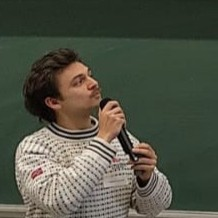

PhD Student · Deep Learning, Ecology & Remote Sensing · UMR LETG, CNRS / Université Rennes 2
I am a PhD student at UMR LETG (CNRS / Université Rennes 2), working at the intersection of computer science, remote sensing, and ecology. My research focuses on training deep Species Distribution Models (SDMs) to map the spatial distribution of three groups of emerging aquatic insects (Ephemeroptera, Plecoptera, and Trichoptera).
These insects provide critical ecosystem services, including organic nutrient transfer, pollination, and crop pest control. To build high-resolution habitat maps, I use drone-based data (multispectral imagery and LiDAR-derived digital elevation models) and combine them with deep learning methods. A particular focus of my work is on explainability (XAI): understanding why models predict where they do, in order to make AI-driven ecology more interpretable and trustworthy.
I am supervised by Thomas Corpetti and Thomas Houet. My PhD started in April 2024 and is expected to conclude in June 2027.
Deep Species Distribution Models
I develop and train deep Species Distribution Models (SDMs) to predict the spatial distribution of three orders of emerging aquatic insects: Ephemeroptera (mayflies), Plecoptera (stoneflies), and Trichoptera (caddisflies). These insects are bioindicators of freshwater quality and providers of key ecosystem services such as nutrient cycling, pollination, and pest control.
My models integrate very high-resolution drone imagery and LiDAR data to capture fine-grained landscape features that drive insect presence and abundance.
Drone Remote Sensing
A key component of my work is the acquisition of very high resolution remote sensing data using UAVs (drones). I collect both multispectral imagery and LiDAR point clouds to produce detailed maps of habitat structure, vegetation type, and landscape composition at scales relevant to insect ecology.
Explainable AI (XAI)
Making deep learning models interpretable is central to my research. I work on concept-based explainability methods applied to SDMs, with the goal of identifying which landscape features (concepts) drive model predictions. This contributes both to ecological understanding and to building trust in AI-assisted biodiversity assessment.
I have released a high-resolution landscape dataset designed for concept-based XAI benchmarking — see the Publications section for details.
Augustin de la Brosse, Damien Garreau, Thomas Houet, Thomas Corpetti
Accepted – ECML 2026, Applied Data Science Track
arXiv preprint
Rencontre d'écologie du paysage, April 2025, Strasbourg, France
AnaEE, September 2026, Menton, France
ORASIS, June 2025, Le Croisic, France — PDF
AI4EO, September 2025, Rennes, France
DeepSDM 2026, June 2026, Sion, Switzerland
Topic: Deep learning to map floral species in the Breton moors.
UMR LETG, CNRS / Université Rennes 2
Supervised by Thomas Corpetti and Thomas Houet
HEC Paris (Management) & École Polytechnique–HEC Paris (AI)
Under the supervision of Damien Garreau. This stay led to the ECML 2026 paper on concept-based XAI for Species Distribution Models.
Address
UMR 6554 LETG, Bâtiment N, Place du Recteur Henri Le Moal, 35043 RENNES CEDEX, FRANCE
Institution
CNRS / Université Rennes 2
Links